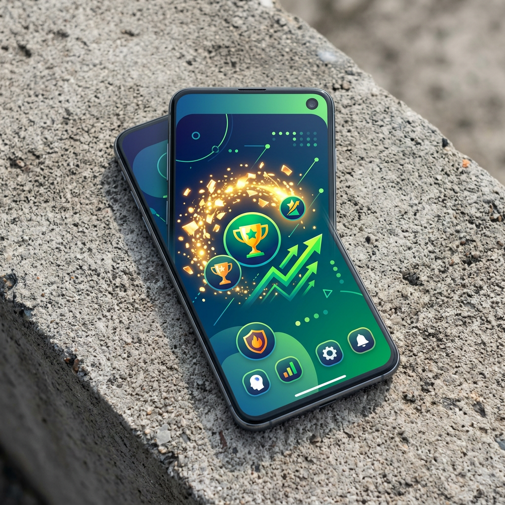

Il Cadoola casino poker rappresenta un'opzione affascinante per chi cerca emozioni strategiche oltre alle classiche slot machine. Sebbene la piattaforma sia nota principalmente per la sua vasta collezione di giochi automatici, la sezione dedicata ai giochi da tavolo offre un'esperienza coinvolgente per appassionati di carte. I giocatori italiani che desiderano combinare strategia e intrattenimento troveranno sul cadoola casino italia un ambiente sicuro e regolamentato, con diverse varianti disponibili sia in versione digitale che con croupier dal vivo. La possibilità di giocare a poker su cadoola attrae sempre più utenti che cercano alternative ai tradizionali tornei di poker online.

L'offerta di Cadoola Casino Poker Online
La collezione di cadoola casino poker online comprende numerose varianti digitali basate su generatori di numeri casuali (RNG). Questi giochi permettono ai giocatori di perfezionare le proprie strategie senza la pressione del tempo reale tipica dei tavoli dal vivo. La piattaforma collabora con fornitori di software riconosciuti a livello internazionale, garantendo grafica fluida e meccaniche di gioco certificate.
Chi desidera iniziare a esplorare questa sezione può completare rapidamente la iscrizione al casinò Cadoola seguendo una procedura guidata che richiede pochi minuti. Una volta registrati, i giocatori accedono immediatamente all'intera libreria di giochi da tavolo, inclusi i popolari titoli di cadoola casino video poker che combinano elementi delle slot con le regole tradizionali del poker a cinque carte.
I titoli RNG consentono sessioni di gioco flessibili, ideali per chi preferisce ritmi personalizzati. Le puntate minime partono da cifre accessibili, mentre i limiti massimi soddisfano anche i giocatori esperti. Tra i fornitori di software presenti figurano nomi affermati che garantiscono equità verificata da enti terzi indipendenti.
Le Regole e le Varianti Disponibili
La selezione di cadoola casino tavoli poker include diverse varianti, ciascuna con regole specifiche. Tra le opzioni più ricercate si trovano il Three Card Poker, il Caribbean Stud e naturalmente il cadoola casino texas hold'em, quest'ultimo disponibile sia contro il banco che in modalità multiplayer.
Nel Three Card Poker, i giocatori ricevono tre carte e devono decidere se puntare o ritirarsi dopo aver valutato la propria mano contro quella del dealer. Le regole del poker casinò per questa variante sono semplici e permettono decisioni rapide. Il Caribbean Stud invece offre un'esperienza più vicina al poker tradizionale a cinque carte, con la possibilità di vincere jackpot progressivi.
Per chi conosce le dinamiche del Texas Hold'em, la piattaforma propone versioni adattate al gioco contro il banco. I limiti di puntata variano considerevolmente: i principianti possono iniziare con scommesse da pochi centesimi, mentre gli high-roller trovano tavoli con limiti superiori. Ogni variante è accompagnata da una sezione informativa che spiega combinazioni vincenti e pagamenti specifici.
Emozioni in Diretta: Cadoola Casino Poker Live
La sezione cadoola casino poker live trasporta i giocatori in un'atmosfera autentica grazie a streaming video in alta definizione. I tavoli dal vivo sono gestiti da croupier professionisti che distribuiscono carte reali, visibili attraverso angolature multiple. Questa trasparenza risponde alle preoccupazioni sulla correttezza del gioco, poiché ogni azione è osservabile in tempo reale.

Il casinò dal vivo offre varianti come il Casino Hold'em e il Three Card Poker con dealer umani. Gli utenti possono interagire tramite chat dal vivo, aggiungendo una dimensione sociale spesso assente nei giochi RNG. Le recensioni tavoli poker live evidenziano la qualità tecnica dello streaming, che raramente presenta interruzioni anche su connessioni di media velocità.
Gli orari di apertura dei tavoli coprono diverse fasce della giornata, consentendo sessioni flessibili. I limiti di puntata nei tavoli dal vivo tendono a essere leggermente più elevati rispetto alle versioni digitali, riflettendo i costi operativi della trasmissione in diretta. Tuttavia, rimangono accessibili anche ai giocatori con budget moderati.
Giocare a Cadoola Casino Poker: Bonus e Tornei
Le promozioni disponibili sulla piattaforma includono offerte di benvenuto e ricarica che possono essere utilizzate anche per i giochi da tavolo. Tuttavia, è fondamentale leggere attentamente i termini: il cadoola casino bonus spesso prevede requisiti di scommessa più elevati quando applicato a giochi diversi dalle slot. Molte promozioni indicano che i giochi da tavolo contribuiscono solo parzialmente al completamento dei requisiti di puntata.
Il bonus benvenuto giochi da tavolo può comunque rappresentare un valore aggiunto significativo, specialmente per chi pianifica sessioni prolungate. Alcuni codici promozionali attivano giri gratuiti utilizzabili su varianti di video poker, combinando l'emozione delle slot con la strategia delle carte. Le condizioni specifiche vanno verificate prima del deposito per evitare sorprese.
Per quanto riguarda i tornei di poker online, la piattaforma organizza occasionalmente eventi speciali con montepremi garantiti. Questi tornei attraggono giocatori competitivi desiderosi di confrontarsi con avversari internazionali. La partecipazione richiede generalmente un buy-in, ma alcune promozioni offrono ticket gratuiti ai membri fedeli del programma VIP.
I Nostri Cadoola Casino Tavoli Poker Preferiti
Tra i titoli più apprezzati nella sezione poker spiccano alcune produzioni che si distinguono per qualità tecnica e ritorno teorico al giocatore (RTP). Il Casino Hold'em Live offre un RTP competitivo superiore al 97%, rendendolo una scelta popolare tra i giocatori informati. L'interfaccia del gioco consente decisioni intuitive anche su schermi ridotti.
Il Three Card Poker in versione RNG presenta animazioni fluide e un ritmo di gioco veloce, ideale per sessioni brevi. Le statistiche integrate permettono di monitorare le performance e adattare le strategie. Per chi preferisce l'autenticità dei dealer dal vivo, il Caribbean Stud Live combina regole classiche con un'atmosfera coinvolgente.

Tutti questi titoli sono perfettamente ottimizzati per dispositivi mobili. Attraverso la cadoola casino app mobile, i giocatori accedono agli stessi tavoli disponibili su desktop senza compromessi sulla qualità grafica o la reattività dei controlli. La compatibilità cross-platform garantisce continuità d'esperienza indipendentemente dal dispositivo utilizzato.
Esperienza di Gioco e Sicurezza
La sicurezza rappresenta una priorità assoluta per i giocatori che scommettono denaro reale. La piattaforma utilizza protocolli di crittografia SSL a 256 bit per proteggere le transazioni finanziarie e i dati personali. La licenza rilasciata dalle autorità di Curacao garantisce controlli regolari sull'equità dei giochi e sulla gestione dei fondi dei clienti.
I metodi di pagamento supportati includono opzioni tradizionali come carte di credito Visa e Mastercard, portafogli elettronici quali Skrill e Neteller, oltre a criptovalute come Bitcoin ed Ethereum. Questa varietà permette ai giocatori di gestire il proprio bankroll con flessibilità, scegliendo soluzioni adatte alle proprie preferenze in termini di velocità e privacy.
I tempi di elaborazione dei prelievi variano in base al metodo selezionato: le criptovalute garantiscono trasferimenti quasi istantanei, mentre i bonifici bancari richiedono alcuni giorni lavorativi. Per iniziare a giocare in sicurezza, è sufficiente procedere con la cadoola casino registrazione veloce, che richiede la verifica dell'identità solo al momento del primo Pagamento: significativo, conformemente alle normative antiriciclaggio.
Confronto: Casinò Locali vs. Piattaforme Internazionali
| Caratteristica | Casinò Locali con ADM | Piattaforme Offshore (es. Cadoola) |
|---|---|---|
| Licenza Italiana | Sì, rilasciata dall'ADM | No, licenze internazionali (Curacao, Malta) |
| Varietà Giochi Poker | Limitata dalle restrizioni locali | Ampia selezione di fornitori globali |
| Bonus e Promozioni | Soggetti a tassazione immediata | Offerte internazionali più generose |
| Metodi di Pagamento | Principalmente carte e bonifici | Include criptovalute e wallet alternativi |
| Tassazione Vincite | Pagamento: alla fonte (25%) | Responsabilità del giocatore dichiarare |
| Supporto Clienti | Spesso solo in italiano e orari limitati | Assistenza multilingue 24/7 |
La scelta tra piattaforme locali e internazionali dipende dalle priorità individuali. I casinò con licenza italiana offrono maggiori garanzie legali sul territorio nazionale, mentre le piattaforme offshore come Cadoola propongono cataloghi più ricchi e condizioni promozionali competitive. È fondamentale che ogni giocatore valuti attentamente vantaggi e responsabilità di ciascuna opzione.
Strategie Fondamentali per il Poker da Casinò
Sebbene la fortuna giochi un ruolo importante, applicare strategie matematiche di base migliora significativamente le probabilità di successo nel lungo periodo. Nel Texas Hold'em contro il banco, conoscere le probabilità di completare progetti di scala o colore permette decisioni più informate su quando puntare o ritirarsi.

Nel Three Card Poker, la strategia ottimale suggerisce di puntare con qualsiasi mano pari o superiore a Q-6-4, ritirandosi con combinazioni inferiori. Questa regola semplice riduce il margine della casa a livelli minimi. Nel Caribbean Stud, calcolare il valore atteso delle puntate laterali aiuta a decidere se rischiare per i jackpot progressivi.
La gestione del bankroll costituisce l'aspetto più critico di qualsiasi strategia sostenibile. Gli esperti raccomandano di non rischiare mai più del 5% del proprio budget totale in una singola sessione. Questa disciplina previene perdite emotive e garantisce longevità nel gioco.
Assistenza Clienti e Responsabilità di Gioco
Il servizio di supporto è accessibile tramite chat dal vivo 24 ore su 24, sette giorni su settimana. Gli operatori rispondono in italiano e altre lingue europee, fornendo assistenza per problemi tecnici, domande sui bonus o chiarimenti sui termini di servizio. L'email rappresenta un'alternativa per questioni meno urgenti, con tempi di risposta generalmente inferiori alle 12 ore.
La piattaforma promuove pratiche di gioco responsabile attraverso strumenti di autoesclusione temporanea e limiti di deposito personalizzabili. I giocatori possono impostare restrizioni settimanali o mensili sul denaro depositabile, prevenendo comportamenti impulsivi. Link a organizzazioni specializzate nell'assistenza ai problemi di gioco sono visibili nel footer del sito.
Per chi rileva segnali di dipendenza, sono disponibili periodi di pausa che vanno da 24 ore a sei mesi. Durante questi intervalli, l'accesso all'account viene bloccato automaticamente, impedendo depositi e scommesse. Questa funzionalità dimostra l'impegno della piattaforma verso la tutela dei giocatori vulnerabili.